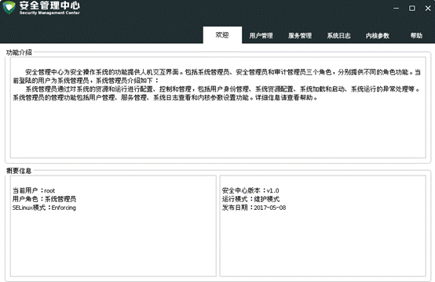
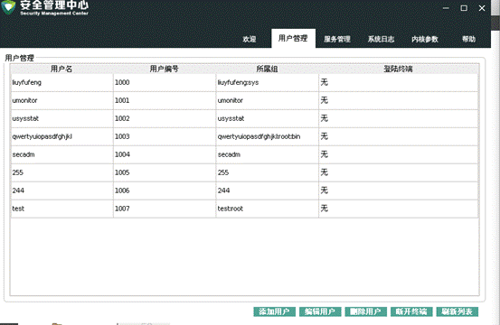
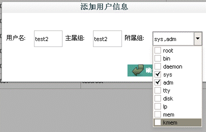
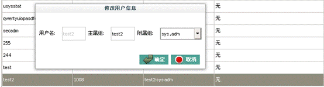
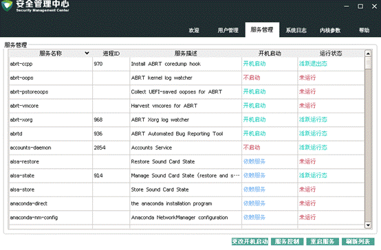
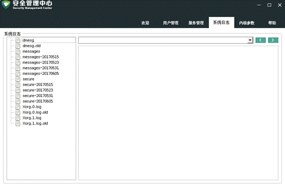
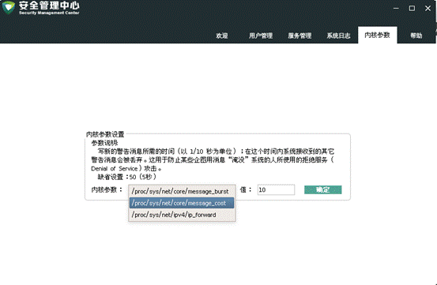

程序启动后，显示欢迎页面。欢迎页面展示当前用户的功能介绍、用户名、用户角色、Selinux模式、版本、运行模式以及发布日期信息。
界面如下：

1.显示用户列表，如上图中所示，包括用户名、用户编号、所属组信息以及登录的终端信息。
2.添加用户：

点击【确定】添加用户。
3.编辑用户：
选中用户，选择【编辑用户】，如下：

点击【确定】，修改用户内容。
4.删除用户：
选中用户，点击【删除用户】。
界面如下：

显示系统服务列表，包括服务名称、进程ID、服务描述、开机启动项、当前运行状态信息。
设置开机启动： 选中服务，点击【更改开机启动】按钮，设置是否开机启动。
启动/关闭服务：选中服务，点击【服务控制】按钮，开启或关闭服务。
重启服务：选中服务，点击【重启服务】按钮，开启或关闭服务。

支持查看dmesg、messages、secure和Xorg的日志记录。

选中要设置的参数，填入要设置的值，点【确定】按钮。